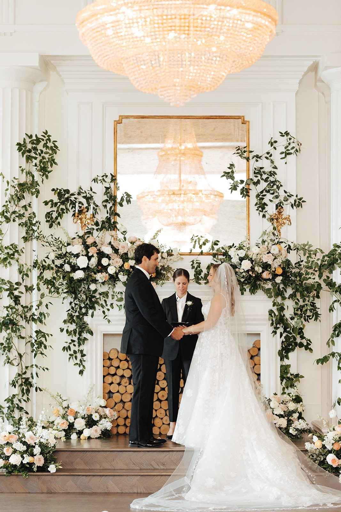
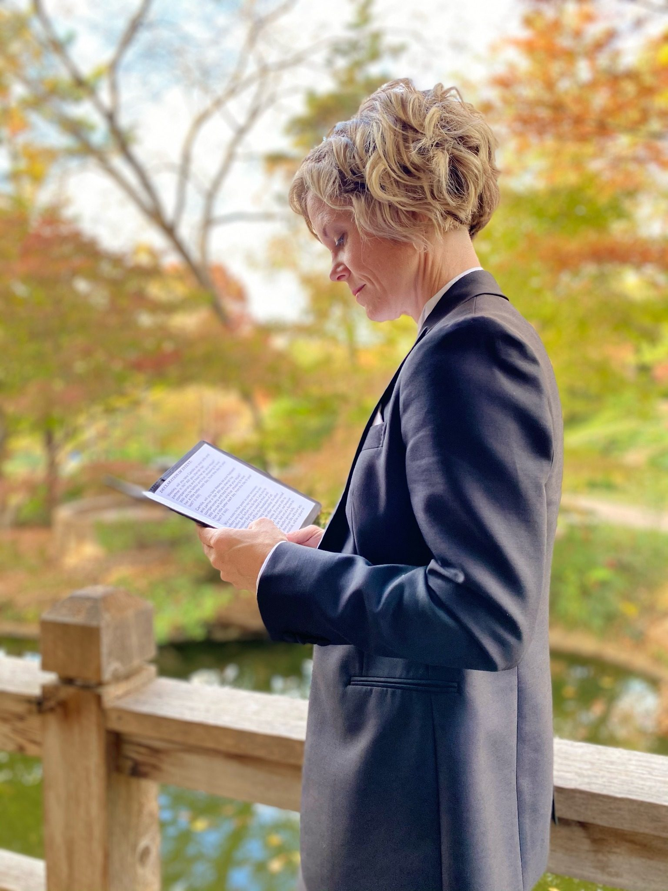
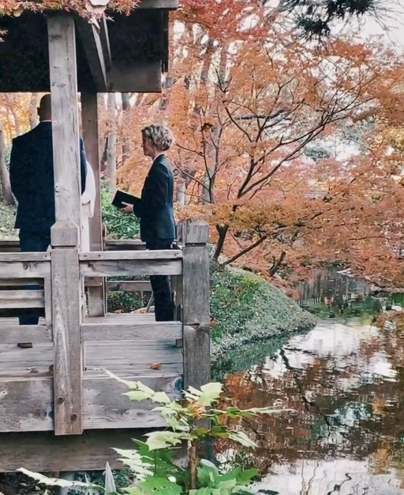
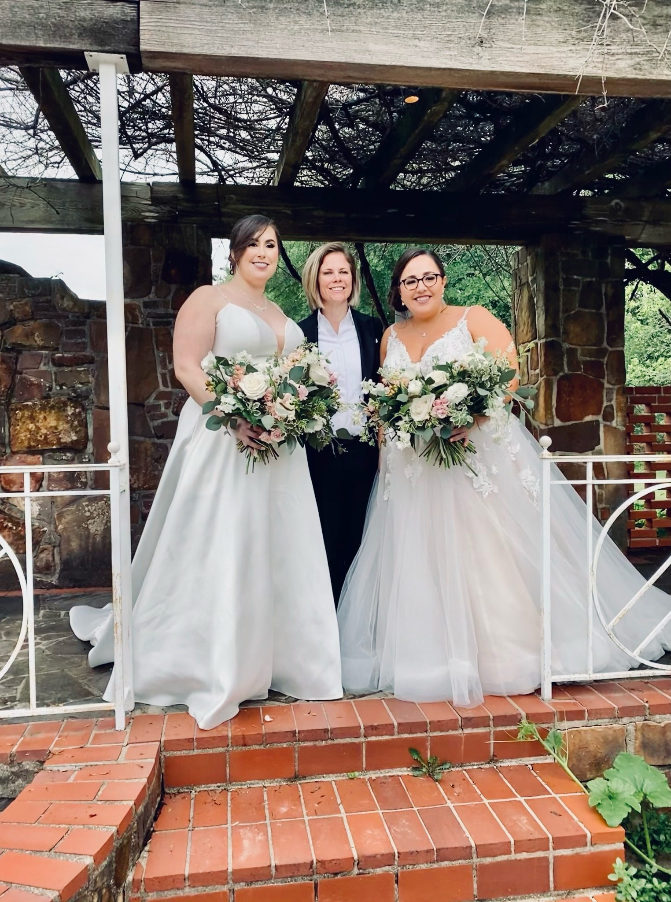
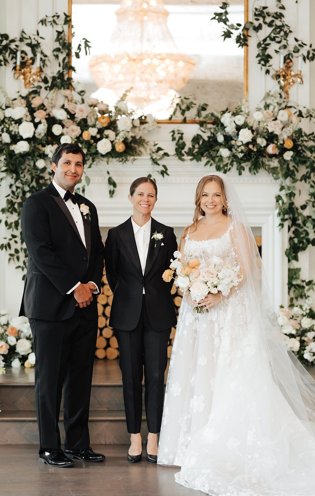
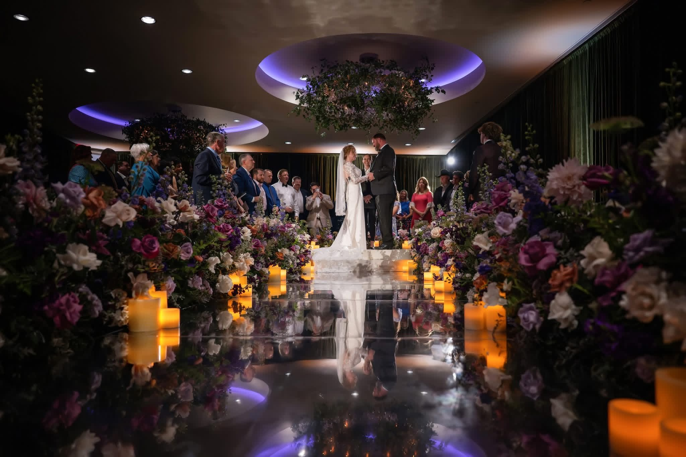
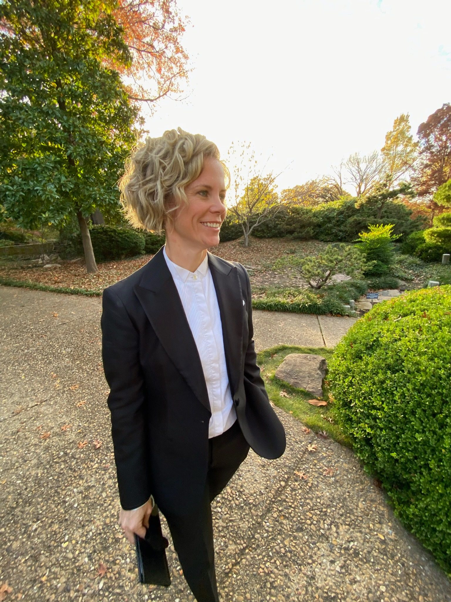

01
Wedding Ceremonies
A heartfelt ceremony built around your relationship, values, personality, and vision for the day.
Dallas–Fort Worth Wedding Officiant
Personalized ceremonies that feel genuine, joyful, inclusive, and unmistakably yours.
Ceremonies with heart. Stories with soul.
Meet Chelsie

If you're looking for someone who simply reads a script, I'm probably not your officiant.
If you're looking for someone who will laugh with you, cry with you, calm your nerves before you walk down the aisle, and tell your love story in a way that feels genuine—you've found your person.
I've spent more than 20 years creating unforgettable experiences in the event industry, so I know that the most meaningful moments are rarely the perfectly planned ones. They're the unexpected glances, the shaky vows, the happy tears, the laughter that fills the silence, and the feeling that everyone in the room is witnessing something truly special.
My officiant journey began in 2019 when two close friends asked me to marry them during their intimate elopement in Kauai, Hawaii. Standing beneath a waterfall surrounded by nature, I experienced something I can't quite explain—it felt like I was exactly where I was meant to be.
I thought it would be my first and last ceremony.
Instead, it became the beginning of something I never saw coming.
Since then, one wedding has led to another through referrals, friends, and complete strangers who connected with the way I tell a love story. Every ceremony reminds me why I said yes in the first place.
I don't believe weddings should sound like they came from a template.
I believe they should sound like you.
Whether your ceremony is elegant, adventurous, deeply spiritual, lighthearted, traditional, unconventional, or somewhere in between, we'll create something that reflects your relationship—not someone else's idea of what a wedding should be.
My own beliefs are rooted in love, energy, connection, and a higher power that guides us toward the people we're meant to meet. I don't subscribe to one religion, which allows me to create ceremonies that are inclusive, welcoming, and customized for couples from every background, belief, and identity.
At Pinky's Officiates, everyone is welcome.
Love is love.
One of my favorite beliefs is that when we entered this world, a small piece of our soul was tucked away in a secret garden. Throughout life, we search for the people who help us become more fully ourselves. When we find our person, it isn't because they complete us—it's because they remind us of a part of ourselves we've always carried within.
That's the story I hope every ceremony tells.
Because your wedding isn't just about saying "I do."
It's about celebrating every step that brought you here—and every adventure that begins the moment you walk back down the aisle together.
I would be honored to help tell your story.
Ceremonies with Heart. Stories with Soul.
Just your story, your people, and one unforgettable moment.
“When we find our person, it isn't because they complete us—it's because they remind us of a part of ourselves we've always carried within.”
Ways to say forever

A heartfelt ceremony built around your relationship, values, personality, and vision for the day.

Intimate, meaningful, and beautifully simple—without ever feeling generic or rushed.

Honor the life you've built and recommit to the adventures still ahead with a ceremony that reflects your journey.

Every love story is welcome
Ceremonies may be religious, secular, spiritual, traditional, unconventional, or somewhere beautifully in between. Every couple is welcomed exactly as they are.
The experience
Share your date, venue, and vision.
We connect and shape the ceremony together.
Your story becomes words that feel true.
I arrive prepared so you can stay present.
Your investment
All-inclusive ceremony pricing with no added charge for personalization, readings, rituals, or the communication needed to make your ceremony feel right.
Personalized ceremony
$350
For full wedding ceremonies throughout the DFW Metroplex.
Intimate and meaningful
$300
For the couple alone or an intimate ceremony with up to 12 guests.
Celebrate your journey
$300
A meaningful celebration of the love and life you've built together.
Payment in full is required before services are rendered.
Always included
Consultation and ceremony planning
Personalized ceremony and love-story elements
Readings, blessings, traditions, and rituals
Unlimited ceremony-related calls, texts, and emails
Preparation, practice, and early arrival
Marriage license completion and filing


Love notes
Chelsie is gathering reflections from couples, friends, and wedding professionals she has worked with. Testimonials will be added here soon.
Before you ask
Chelsie has been licensed and ordained for seven years and began officiating in 2019.
Popular dates can fill quickly, so reach out as soon as your date and venue are confirmed. Last-minute ceremonies may be available.
Yes. Your ceremony will be shaped around your story, personalities, values, preferred tone, and any traditions or rituals you want to include.
Yes. Chelsie performs both religious and secular ceremonies, along with spiritual, interfaith, traditional, unconventional, or thoughtfully blended ceremonies. Every couple and identity is welcome.
Absolutely. You can write your own vows, choose from guided options, or receive help finding words that feel natural and sincere.
Yes. Rehearsal attendance can be added for the listed fee. Chelsie can direct her portion or guide the ceremony flow with your planner or venue team.
Yes. Chelsie is open to travel. Any applicable travel fee will be confirmed based on the ceremony location.
Payment in full is required before services are rendered.
Let's tell your story
Share a few details about your day. Chelsie will follow up to confirm availability and learn more about the two of you.